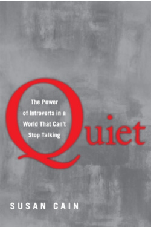

Library › Psychology & People
Quiet — Summary & Key Lessons

The power of introverts in a world that can't stop talking — a third to half of everyone you know is wired differently, and it's a superpower.
📖 OPEN THE FULL INTERACTIVE BREAKDOWN →🌐 Read it in Hindi, Hinglish, Gujarati, Tamil & 22 more languages — free, with audio.
💡 The Big Idea
Cain's cultural correction: sometime in the twentieth century, the West traded a Culture of Character (valued: seriousness, discipline, honor) for a Culture of Personality (valued: magnetism, boldness, salesmanship) — installing the EXTROVERT IDEAL that treats a third to half of humanity as defective. The evidence says otherwise: introverts' wiring (higher baseline reactivity to stimulation, deeper prefrontal processing) trades quick sociability for depth — sustained focus, careful risk assessment, listening leadership. Her findings: brainstorming groups underperform solitary thinkers; open offices tax the deep work economies run on; introverted leaders outperform with proactive teams; and the 'new groupthink' mistakes the loudest voice for the best idea. The toolkit: honor your temperament, use restorative niches, deploy 'free trait' performances for what you love — and if you're raising or managing quiet ones: stop fixing them; start deploying them.
🧠 The 6 Key Lessons
Lesson 1: The Extrovert Ideal: How Loud Became 'Right'
Part 1: The Extrovert Ideal
Cain's history: America's shift from farm to city, from character to salesmanship (Dale Carnegie's rise as symbol), rebuilt the definition of the ideal self — bold, gregarious, camera-ready — and the institutions followed: schools arranging pods for constant collaboration, companies hiring for 'energy,' Harvard Business School training the confident-instant-answer as leadership itself. The costs she documents: a third to half the population performing a personality (with the anxiety bill that acting incurs), organizations systematically over-promoting the articulate over the correct (the 'zero correlation between being the best talker and having the best ideas' finding), and the cultural blind spot: history's transformative work — relativity, Chopin's nocturnes, Google's algorithms, Gandhi's movements — issued disproportionately from the quiet end of the spectrum, mostly in solitude the modern office would never permit.
📖 Example: Cain's opening exhibit is Rosa Parks — the 'timid and shy' woman of the obituaries whose quiet was not the absence of courage but its container ('quiet fortitude': the No that reorganized a nation, spoken softly). Her business-school chapters supply the… Read the full example →
⚡ Do this: Audit your own bias: at your next three meetings, note whose ideas WIN versus whose were BEST (they diverge more than you think), and whether you rate confidence as competence. If you're quiet: log the moments you self-censored — that list is your untapped inventory.
Lesson 2: The Wiring: High Reactivity, Deep Processing, Different Rewards
Part 2: Your Biology, Your Self
The science spine: Jerome Kagan's longitudinal studies found HIGH-REACTIVE infants (big responses to novel stimulation) reliably grow into careful, inward adults — introversion begins as a nervous system that experiences the world at higher volume, and therefore seeks less of it. Elaine Aron's sensitivity research adds the processing layer: the quiet tend to process deeply (more prefrontal activity per input — noticing more, weighing longer), and reward-circuit work explains the temperament trade: extroverts' dopamine systems run hotter for buzz-rewards (novelty, status, crowds), while introverts' acetylcholine-flavored contentment favors focus and calm — neither superior, differently PRICED environments. Cain's crucial nuance stack: introversion ≠ shyness (shyness is fear of judgment; introversion is stimulation-preference — you can be a confident introvert or an anxious extrovert), the spectrum is real (ambiverts hold the middle), and 'free trait theory' (Brian Little): anyone can act out of character FOR CORE PROJECTS — the introverted professor performing passionate lectures — sustainably only with RESTORATIVE NICHES: the recovery pockets where the nervous system pays its bills.
📖 Example: Kagan's counterintuitive prediction is the section's anchor: the infants who thrashed hardest at mobiles and strangers — the 'difficult' babies — became the calm-seeking, careful adolescents; the biology preceded any personality. Brian Little himself is… Read the full example →
⚡ Do this: Map your battery: list what drains and restores you (crowds? calls? solitude? one-on-ones?) — then engineer one restorative niche into every high-performance day (the walk between meetings, the closed door at lunch). If you're performing out of character, make sure it's for a core project — and price in the recovery.
Lesson 3: The New Groupthink: When Collaboration Kills Creativity
Part 1: When Collaboration Kills Creativity
Cain's workplace broadside: the NEW GROUPTHINK — the belief that creativity and productivity are inherently social — built the open office, the constant meeting, and mandatory brainstorming; the evidence convicts all three. Brainstorming's four-decade record: groups produce FEWER and worse ideas than the same individuals working alone (production blocking, evaluation apprehension, and social loafing all tax the room), while electronic/asynchronous idea-pooling outperforms both. The DELIBERATE PRACTICE literature (Ericsson) lands the deeper point: the skill-building that creates excellence is, structurally, solitary — the practice room, not the jam session — and open offices' documented costs (interruption, stress, error rates) tax exactly that. Cain's balanced prescription: collaboration for exchange and commitment, SOLITUDE for creation and depth — offices, schools, and teams designed like good cafés: zones for buzz AND burrows for focus, with participation valued by contribution rather than airtime.
📖 Example: The Wozniak case opens and closes the argument: Apple's founding engineering — the Apple I and II — was built by Steve Wozniak substantially ALONE (early mornings and late nights at his HP desk), by his own account precisely because solitude was where the… Read the full example →
⚡ Do this: Redesign one workflow: move idea-GENERATION to asynchronous solo rounds (everyone writes before anyone speaks), reserving meetings for selection and commitment. Personally: schedule two 'burrow blocks' weekly — interruption-proof deep work — and defend them like revenue meetings, because they are.
Lesson 4: Quiet Strength Deployed: Leadership, Love & Raising the Quiet
Parts 3–4: Do All Cultures Have an Extrovert Ideal? / How to Love, How to Work
The application chapters. LEADERSHIP: Adam Grant's research finds introverted leaders outperform extroverts with PROACTIVE teams (they listen, adopt ideas, and don't need the spotlight; extroverted leaders shine with passive teams needing ignition) — the lesson being fit, not hierarchy of styles; and the quiet-leader roster (Gandhi's 'in a gentle way, you can shake the world', Wozniak, Buffett's Omaha distance from Wall Street's noise) proves influence doesn't require volume. NEGOTIATION & CONFLICT: the soft-spoken, question-asking style disarms where aggression escalates — Cain's lawyer story: her own quiet, relentlessly reasonable negotiation read as strength, not weakness. PAIRINGS: introvert-extrovert couples and teams are complementary engines IF the difference is understood as wiring, not rejection ('he's not cold; she's not shallow'). And RAISING quiet kids: the extrovert-ideal's cruelest tax — the antidote is honoring temperament (arrive early to parties rather than skipping them; one best friend counts as social success), teaching skills WITHOUT shaming the wiring, and letting them see their quiet as the location of their powers, not a condition awaiting cure.
📖 Example: Grant's pizza-chain study is the leadership exhibit: stores with proactive crews earned MORE profit under introverted managers (who implemented the crew's ideas) and less under extroverted ones (who talked over them) — the reversal appearing exactly as… Read the full example →
⚡ Do this: Match style to team: if you lead proactive people, talk less and implement more (your quiet is the feature); if you're pairing with your opposite, write the translation note — what each style MEANS versus how it reads. And for any quiet kid in your orbit: this month, publicly frame their quiet as capability ('great focus', 'deep thinker') — the reframe they'll carry for decades.
Lesson 5: The Orchid Hypothesis: Sensitivity Is Not a Flaw
Part 2: The Wiring
Cain's research on highly sensitive people: introverts' nervous systems react more deeply to stimulation — they notice more, process more, and get overwhelmed faster. This is not weakness; it is a different operating system. She cites the 'orchid hypothesis': like orchids, sensitive children are easily damaged by bad environments — but flourish more spectacularly than everyone else in good ones. The sensitivity that makes a loud office exhausting also makes a quiet thinker see patterns others miss. The goal is not to become less sensitive; it is to build environments that let your depth work for you instead of against you.
📖 Example: Cain describes how the same trait that made a young introvert 'too shy' in class made her an extraordinary observer of people — a skill she later turned into a career in psychology and writing. The trait didn't change; the context did. Read the full example →
⚡ Do this: Audit your week for 'noise' — loud, chaotic, overstimulating situations. Remove or shorten two of them and protect one quiet block for your deep work.
Lesson 6: The Soft Power of Introverts: Why the Quiet Lead Better
Part 4: The Leadership
Cain's counterintuitive leadership chapter: introverted leaders often outperform extroverted ones — because they let proactive employees run with their ideas rather than steamrolling them with their own. Research shows introverted leaders get better results from proactive teams, while extroverted leaders' dominance suppresses initiative. The quiet leader's tools: listening before speaking, one-on-one conversations, written communication, and deep preparation. Power doesn't require volume. The introvert who stops apologizing for their style and starts using it — as a listener, a thinker, a calibrator — becomes a leader others trust precisely because they feel heard.
📖 Example: Cain cites a study of MBA students where teams led by introverts outperformed those led by extroverts — because the introverts' quiet style let talented team members contribute fully. The loudest person in the room is rarely the one getting the best out of it. Read the full example →
⚡ Do this: In your next team meeting, speak last. Listen fully, then offer one considered observation — and notice how people respond to the silence you bring.
✅ 5-Step Action Plan
- Track best-idea vs loudest-voice divergence in three meetings.
- Map your battery; build one restorative niche into every big day.
- Move idea-generation to solo-first rounds; defend two burrow blocks weekly.
- Lead proactive teams by listening; translate across the wiring gap at home.
- Reframe one quiet person's temperament as power — starting with your own.
💬 Best Quotes from Quiet
- “There's zero correlation between being the best talker and having the best ideas.”
- “Solitude matters, and for some people, it's the air they breathe.”
- “Don't think of introversion as something that needs to be cured.”
Interactive version: mark lessons as read, listen in your language, share quote cards.